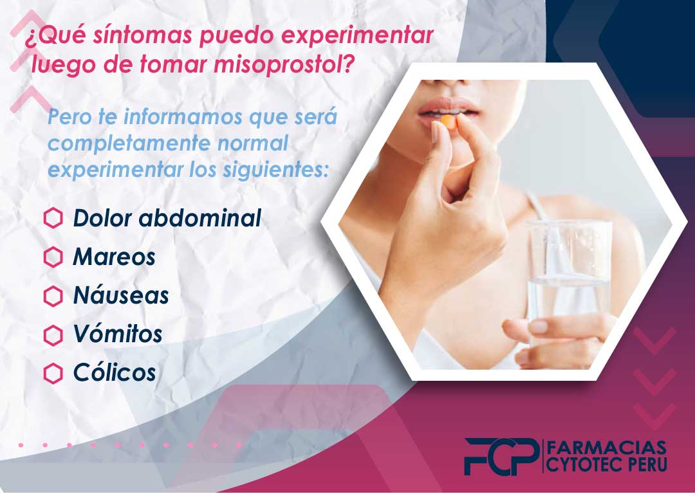
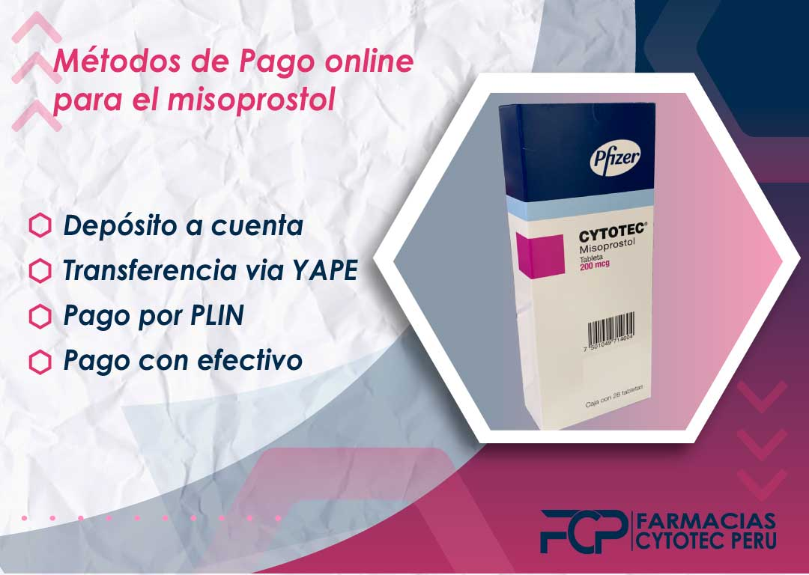

Venta de Misoprostol online en Lima Perú.
El misoprostol es un medicamento que se puede usar para abortar. Es importante tener en cuenta que no es un anticonceptivo y solo debe tomarse cuando esté seguro de que lo necesita. Misoprostol ahora se puede comprar en línea en nuestra página web, solo escribe a nuestros números de WhatsApp o Telegram, ahora no tienes que ir a la farmacia o al consultorio médico. Esto significa que las mujeres que no pueden acceder a este medicamento ya no tendrán la barrera de no poder conseguirlo acudiendo a una farmacia.
Que hacer luego de usar Cytotec?
Es guardar Reposo? Luego del aborto lo más recomendable es guardar reposo aproximadamente 1 a 2 días luego del aborto, estando en casa en reposo total, esto ayudara a cicatrizar más rápido por dentro del útero donde se produjo el desprendimiento.

Esto hará que sea más fácil para las mujeres que necesitan este medicamento pero no quieren que sus familiares o amigos se enteren de su aborto. El costo del medicamento es de 280 soles y es posible comprarlo sin receta médica. Esto hará que sea más fácil para las mujeres que necesitan este medicamento pero no quieren que sus familiares o amigos se enteren de su aborto. Cobertura de seguro ampliada: creemos que los proveedores de atención médica nunca deben verse limitados en su capacidad para acceder a los recursos que necesitan para brindar
¿Qué síntomas puedo experimentar luego de tomar misoprostol?

Como cualquier medicamento que ingresa a nuestro organismo, misoprostol puede hacerte sentir algunos sintomas que es probable que te hagan sentir un poco asustada o preocupada, pero te informamos que será completamente normal experimentar los siguientes:
En caso encuentres algunos síntomas que no reconozcas en las indicaciones que te hemos dado, escríbenos a nuestro Whatsapp para darte soporte inmediato.
¿Es mejor comprar misoprostol online o en farmacias?
El misoprostol se puede comprar en línea en farmacias que venden misoprostol sin receta y también está disponible en distintas páginas web nuestras y puedes acceder a su venta sencillamente por nuestro Whatsapp o Telegram. La venta de misoprostol online te permite tener un contacto directo con el vendedor y además un libro de reclamaciones con información detallada sobre cómo usarlo correctamente.
¿Cuántas pastillas vienen en un paquete de misoprostol?
Al comprar el Misoprostol venta online en Perú puedes adquirir un paquete original de misoprostol con 12 pastillas de 200 mcg. Estas pastillas tienen unos componentes adicionales como hipromelosa, celulosa microcristalina, carboximetilalmidón sódico, aceite de ricino hidrogenado. Este paquete de misoprostol puede ayudarte a prevenir úlceras en el estómago, especialmente a aquellas personas que consumen medicamentos frecuentemente. Tambien sirve para para generar contracciones en el útero de la mujer y asi estas produzcan un aborto 100% efectivo con medicamentos.
¿Cuántas pastillas de misoprostol debo tomar?
Una mujer dependiendo el mes de embarazo en el que se encuentre, si cuentas con menos de 3 meses (12 semanas) por lo general se debe consumir hasta 9 pero por recomendaciones médicas y asegurar tu aborto al 100% recomendamos una dosis de 12 pastillas de misprostol (cytotec) al momento de tomar la pildora abortiva
¿Cuántas pastillas de misoprostol debo tomar si tengo más de 12 semanas?
si tienes más de 12 semanas es probable que se te recomiende tomar unas 16 pastillas, para esto recomendamos que escribas a nuestro personal médico el cual cuenta con una atención médica 24/7, escribirles es muy sencillo y lo puedes hacer en nuestros botones de Whatsapp o Telegram, comunicarte con ellos es totalmente gratuito y contarás con la compañía de una mujer.
Quienes no pueden tomar misoprostol | Contraindicación de Misoprostol
En caso de que lo último que busques es abortar, en ese caso no recomendamos esta pastilla, pues misoprostol ha demostrado que es una pastilla abortiva, esta puede producir que un feto sea abortado inmediatamente, pues origina contracciones en el útero, es por este motivo que no recomendamos tomar misoprostol a las mujeres embarazadas que deseen continuar con su embarazo.
En caso desees abortar, pues recomendamos comprar misoprostol en su caja original de 12 pastillas, nosotros hacemos la venta de las mejores píldoras abortivas en Lima Perú y puedes escribir a nuestro Whatsapp o Telegram para obtenerlas.
Existen otros casos de personas que no pueden tomar misoprostol, como sería el caso de aquella que tengan:
Métodos de Pago online para el misoprostol

Los métodos de pago de nuestros medicamentos para abortar (pastillas abortivas) para el misoprostol venta online en Perú son los siguientes:
En caso necesites Asesoría para poder hacer este procedimiento para abortar en casa, contacta inmediatamente a nuestro personal médico por nuestro Whatsapp, la atención es super rápida y estamos preparados para cualquier duda o inconvenientes que tengas durante el proceso.